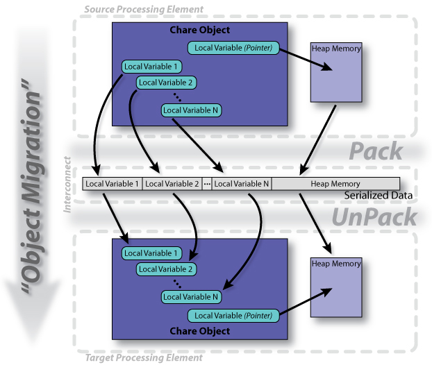

Pack-UnPack (PUP) Routines
Object Migration
One of the main advantages of having an application broken down into a set of chare objects is that the chare objects are migratable. By migratable, we mean that no one chare object is tied to a particular processing element. Because of this, the Charm++ Runtime System can freely migrate the chare objects in a Charm++ application between the processing elements available. There are numerous reasons for doing this.
- Load-Balancing: The most obvious reason for wanting to migrate objects is the ability to balance the workloads of the various processing elements. If a few processing elements, or even just a single processing element, is overloaded, the rest of the processing elements will become idle. This wastes precious processing cycles and results in an overall degradation of the application's performance. By dynamically migrating the chare objects between the processing elements, the Charm++ Runtime System is able to re-balance the workloads of the processing elements based on actual runtime data so that all of the processing elements are being fully utilized.
- Fault Tolerance: Another benefit of being able to migrate objects is being able to duplicate objects (either on disk for a checkpoint or in-memory to enabling dynamic fault recovery). If one of the processing elements were to fail/crash during the execution of a Charm++ application, the duplicated object states can then be recovered and the lost object recreated while the rest of the application (i.e. chare objects on unaffected processing elements) continues to execute. Furthermore, if the Charm++ Runtime System is warned by the underlying system that a processing element or node is about to fail (e.g. temperature sensor warning), the chare objects on that particular processing element(s) can be migrated away from the defective hardware in an attempt to avoid the fault altogether.
- Shrinking/Growing Executions: As a Charm++ application is executing, the load of the overall cluster may changed (i.e. another job is launched, a more important job is launched, another job may complete freeing processing elements, and so on). Because the chare objects can be moved around freely, the Charm++ application can dynamically move objects onto and off of processing elements. Effectively, this give a Charm++ application the ability to abandon processing elements that it is currently using (freeing them for other activities) or to migrate work onto newly available processing elements. Once again, this can be done dynamically by the Charm++ Runtime System while the Charm++ application continues to run.
- Parameter Marshaling: Generally speaking, an object (not just chare objects; C++ objects, C structures, and so on) can have PUP routines. Any object that has a PUP routine can then be passed as an argument in an entry method invocation.
{kind=link}
|  |
|
Figure: Process of "Object Migration": A Chare Object Moving from One Processing Element to Another Processing Element |
Pack-UnPack (PUP) Routines
What makes object migration possible is the ability to serialize the state of a chare object into a contiguous piece of memory (i.e. a message, a file, and so on). By serializing the state of the chare object, the chare object can be recreated, along with its state, at a later time and potentially in a different location such as another processing element. See the figure to the right. For a chare object to be able to undergo object migration, it must have a Pack-UnPack or PUP routine. The PUP routine performs the tasks of sizing, packing (serializing), and unpacking (deserializing) the chare object.
- Sizing: (On source processing element) First, the PUP routine is called by the Charm++ Runtime System to measure how much memory will be needed (i.e. the size of the buffer) to encapsulate the state of the chare object. Once the size of the buffer is known, the buffer is allocated by the Charm++ Runtime System.
- Packing: (On source processing element) Second, the PUP routine is called again to actually pack the state of the chare object into the buffer.
- Migration: At this point, the buffer can be sent to another processing element via a message, it can be stored into a file on a hard disk for later use (checkpoint), and so on.
- Unpacking: (On target processing element) Finally, once the buffer arrives to its target processing element, the PUP routine is called again to unpack the state of the chare object thus recreating the chare object that was originally packed on the source processing element.
The process of object migration, can be controlled by the Charm++ application. By default, the Charm++ Runtime System can initiate object migration for a chare object at any time (as long as the chare objects isn't currently executing an entry method). However, it is possible for the Charm++ application to indicate that object migrations should only occur at specific times when it is safe to do so.
PUP Routine Example
|
The code example to the right contains an example chare object with its associated PUP routine. The process of migrating the object is outlined below.
- Step 1 - Call to ckAboutToMigrate(): Optionally, one can override the virtual member function ckAboutToMigrate() in their chare class. If this is done, this member function will be called on the chare object before the process of packing the chare object begins.
- Step 2 - Sizing: MyChare::pup() is called with a sizing PUP::er. When this occurs, the | (pipe) and () (parenthesis) operators simply do a sizeof operation. The sizing PUP::er can then accumulate the sizes of all the data that needs to be packed.
- Step 3 - Packing: MyChare::pup() is called a second time with a packing PUP::er. This time, the | (pipe) and () (parenthesis) operators copy the data from the variable specified (or what the variable points to for pointers) into the buffer allocated by the Charm++ Runtime System.
- Step 4 - Destructor: MyChare::~MyChare() is called to destroy the object. Note that this step only occurs if the chare object is being destroyed on the source processor (e.g. if the object is migrating). This step would be skipped if the chare object's state is simply being checkpointed (and thus the heapArray is free'd in the destructor and not in the PUP routine).
- Step 5 - Constructor: MyChare::MyChare(CkMigrateMessage *msg) is called to create the chare object on the destination processing element.
- Step 6 - UnPacking: MyChare::pup() is called for a third time with an unpacking PUP::er. This time, the | (pipe) and () (parenthesis) operators copy the data from the buffer into the variable specified (or what the variable points to for pointers).
- Step 7 - Call to ckJustMigrated(): Optionally, one can override the virtual member function ckJustMigrated() in their chare class. If this is done, this member function will be called on the chare object after the process of unpacking the chare object has completed.
Please Note: The code to the right assumes that (1) the migration constructor, MyChare::MyChare(CkMigrateMessage *msg), does not allocate memory for heapArray and that (2) the heapArray pointer points to something by the time the object migration process begins. A similar technique, as was used for heapArray in this example, can be used for handling the opening and closing of files, and so on.
Useful PUP::er Functions
- isSizing(): Returns true if the sizing step is occurring, false otherwise.
- isPacking(): Returns true if the packing step is occurring, false otherwise.
- isDeleting(): Returns true if the packing step is occurring and the object being PUP'ed will be deleted immediately afterwards, false otherwise.
- isUnpacking(): Returns true if the unpacking step is occurring, false otherwise.